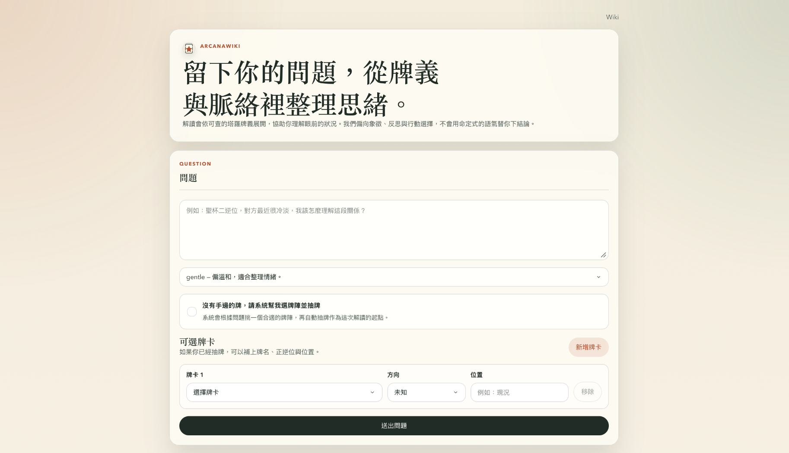
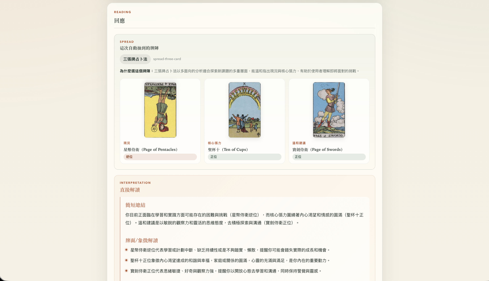
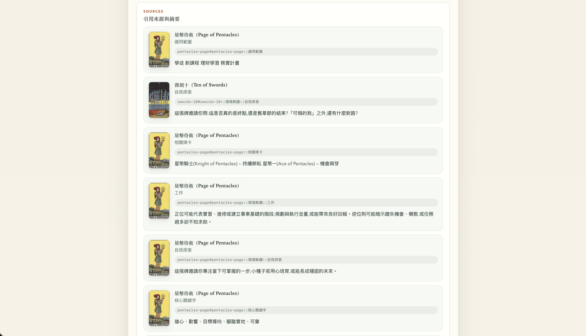
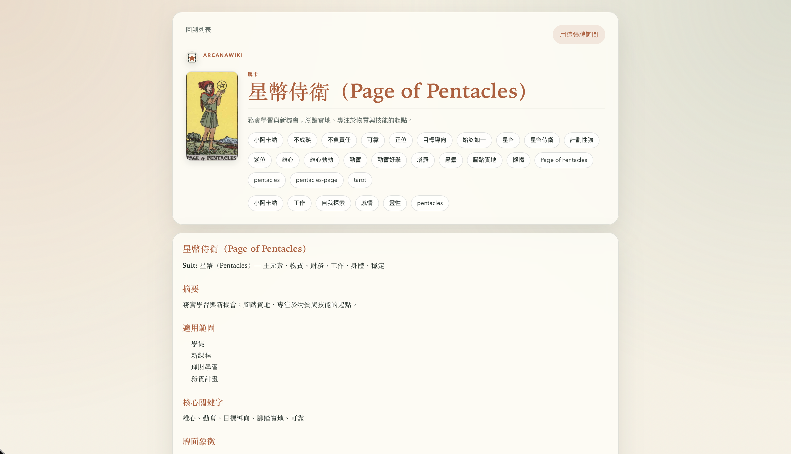
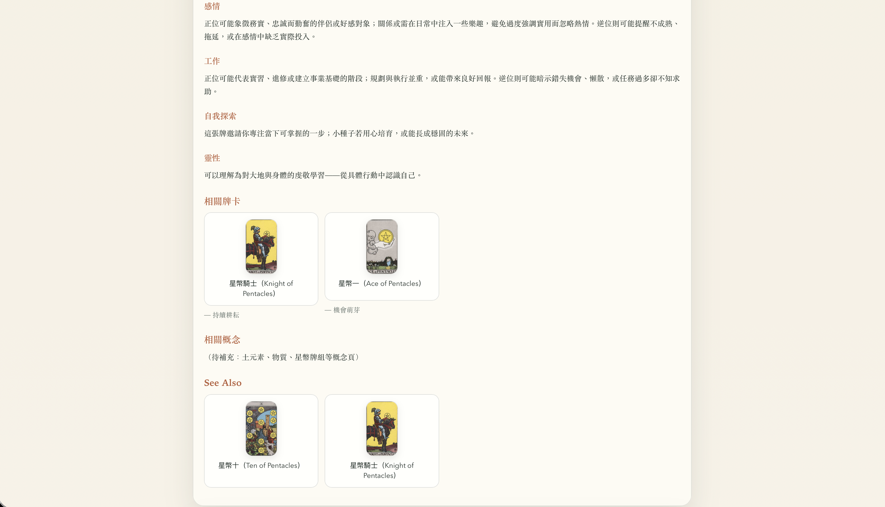

親手實作 Hybrid Search，驗證 Karpathy LLM Wiki 的「編譯知識層 + runtime 檢索」做法。
塔羅——知識範圍有限、結構固定，適合練這套架構；零 DB、檔案型索引。
問答 + citation 參考文本：回答必須對應整理過的 wiki，使用者可點擊驗證來源。
不限塔羅——客服機器人、內部 SOP、產品說明等有限知識系統都適用同一套做法。
從個人動機出發，不是市場分析
起點很單純：我想親手實作 Hybrid Search，並實際驗證 Karpathy LLM Wiki 這套「把知識編譯成 wiki、runtime 再檢索」的做法，做起來效果到底如何。
我沒有打算長期維護會經常變動的資料庫，所以刻意選了檔案型知識庫。 命題則選了塔羅——當時女友很喜歡塔羅牌，知識範圍有限、結構也相對固定，很適合拿來練習。
從產品構想、架構決策到實作皆一人完成；開發過程主要借助 Codex 協作，方向與程式審閱由我主導。
直接丟 LLM 不夠「客觀」
過去我會直接把問題和牌面一起丟給 LLM 解讀——不只是塔羅，上升星座、紫薇命盤或其他占卜形式也試過。 結果都受限於 LLM 的生成方式，顯得很不穩定。
這對我來說不是一個客觀的系統。我想要的是：回答必須能對應到我整理過的知識， 而且使用者可以回頭查證依據，而不是每次都在賭模型當下的「靈感」。
問答流程才是示範重點
輸入問題、選擇語氣模式（gentle / direct / reflective），可手動選牌或讓系統自動抽牌陣。

PWA 首頁
系統依問題自動選擇三張牌陣，產生簡短總結、牌面象徵與各牌說明。

解讀回應
每次回答附帶 selectedSources，列出引用的 wiki chunk、牌卡縮圖與摘要。
支援點擊 citation 驗證來源——這才是我想展示的核心。

citation 與來源摘要
/wiki 可獨立瀏覽牌義與概念頁；對我而言真正有示範價值的是問答流程本身。

牌卡詳情：frontmatter 驅動的摘要與象徵

情境解讀分類與內部連結
當時想解決什麼 → 為什麼沒選 → 最後怎麼選 → 代價
raw/ 不可變原始資料，wiki/ 是 compiled layer；知識更新時重新 compile 與建 index。wiki/**/*.md + BM25 / vector cache / graph.json，全部檔案化、可重建。[來源: pageId#chunkId]，回答後硬驗證；失敗回 safety fallback。中文口語查詢 vs 結構化 wiki
使用者常以口語中文提問（如「他對我是真心的嗎」），但 wiki 是結構化牌義； 固定字數 chunking 會切碎語意，純 BM25 也難命中「聖杯二逆位」這類塔羅片語。
## / ### headings 切分；情境解讀 再拆成感情 / 工作 / 自我探索 / 靈性子 chunk沒上 Elasticsearch 或 LLM reranker，是因為想保持可控、可測試、零 DB。
架構與規模
raw/ → wiki/ → embeddings/ (BM25 + vector) + graph.json
│
┌───────────┴───────────┐
▼ ▼
PWA 問答 公開 Wiki
POST /api/chat /wiki（只讀）
│
▼
Hybrid Retrieval → Prompt → OpenAI → Citation 驗證 → Safety 驗證
| 項目 | 內容 |
|---|---|
| 前端 | Next.js 15 App Router PWA；gentle / direct / reflective 三種語氣 |
| 知識規模 | 105 篇 wiki、78 張塔羅牌（concepts、emotions、relationships、patterns） |
| 測試 | 17 個 test 檔，覆蓋 retrieval、answer、safety、citation、PWA UI |
| 規模 | 約 10k 行 TypeScript；production dependencies 僅 Next / React |
| 優先 | 刻意沒做 | 若條件改變 |
|---|---|---|
| 可追溯（citation 硬驗證） | 追求高回答率 | corpus 大時遷移 pgvector |
| 可控的中文檢索 | 直接用 Elasticsearch | 需要時加 LLM reranker |
| 零 DB 運維 | 大規模部署能力 | 加 auth、rate limit、budget guard |
| 驗證架構可複製性 | Streaming chat 體驗 | 加 streaming 改善 UX |
不是「做了一個塔羅 App」，而是驗證了一套可以搬到其他場景的做法： 有限知識庫 + hybrid retrieval + 強制引用。 若下一步有時間，會優先補 answer quality eval dataset，讓穩定性可以用數據說話。